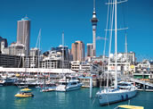
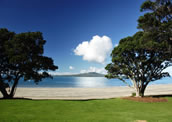

Auckland
Dubbed the 'city of sails' and often referred to as the 'land of idyllic islands and rolling green hills', Auckland is New Zealand's largest city with an ever increasing population of over 1.5 million people. Auckland is a vibrant, modern city that offers something for everyone.
If you enjoy shopping and the city life, Auckland offers a shopping experience that will leave you exhausted! Countless Restaurants, Sky City Casino, night clubs and much more make the city an exciting place to visit.
For adventure enthusiasts, Auckland offers a wide variety of activities including sailing on the harbour, boat cruises of the outer islands, snorkling, scuba diving, biking, surfing, Bungy Jumping and bridge climbing to name a few. For those of you who enjoy getting away from the busy city life, there are countless walks which take you past the many beaches in the area. Auckland's cultural icons such as the Museum and One tree hill are also worth a visit. If you have time to spare, we recommend visiting Waiheke and Great Barrier Islands.